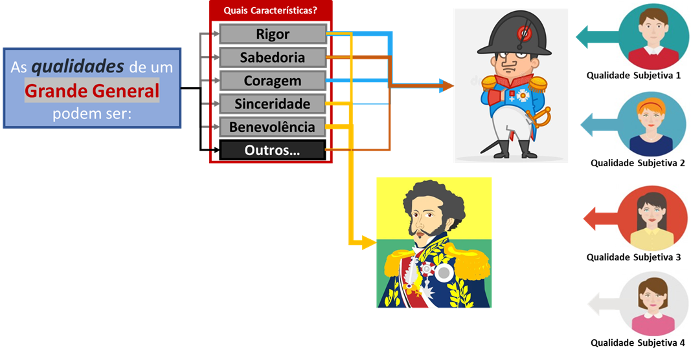
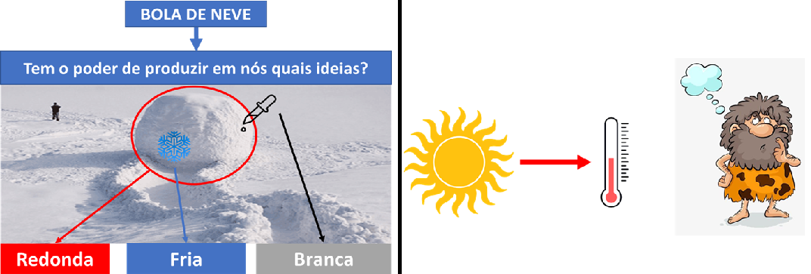
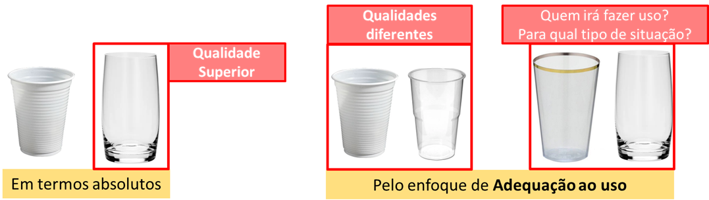
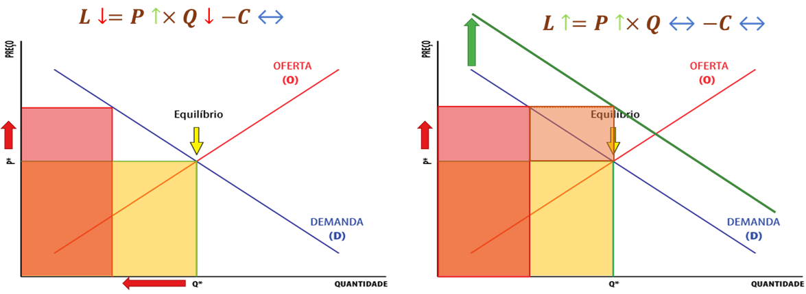
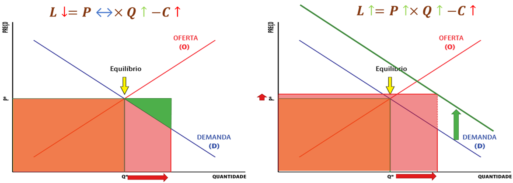
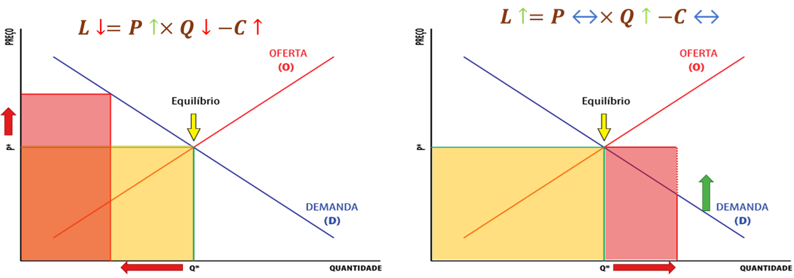

1 Fundamentos e Conceitos da Qualidade
Neste capítulo, estabeleceremos os alicerces teóricos e normativos da Qualidade. Ao final da leitura, você será capaz de:
- Compreender a dupla dimensão da Qualidade (objetiva e subjetiva) e sua evolução histórica rumo à gestão estratégica (Market-in).
- Analisar o impacto econômico da Qualidade, utilizando a equação de Valor Agregado para diferenciar requisitos qualificadores de critérios ganhadores de pedido.
- Correlacionar a excelência operacional com as variáveis microeconômicas de Preço, Custo, Produtividade e Participação no Mercado.
- Dominar a taxonomia da ISO 9000, diferenciando rigorosamente Produto de Serviço, e o conceito de Qualidade do conceito de Grau (luxo).
- Estruturar a base lógica para a modelagem analítica, traduzindo o vocabulário normativo em variáveis matemáticas prontas para a engenharia.
1.1 Evolução Histórica e Definições
1.1.1 O Conceito Geral e a Subjetividade da Qualidade
A popularização do termo “Qualidade” é fruto de um esforço histórico para disseminar o conceito, o que não é, por si só, um aspecto negativo. O problema central reside na imprecisão das definições adotadas pelo senso comum, que frequentemente se distanciam do rigor técnico necessário. Para a gestão, isso representa um desafio considerável: é extremamente complexo tentar “redefinir” ou restringir o uso de uma expressão que já se tornou patrimônio do domínio público e que todos acreditam compreender plenamente.
Em seu sentido genérico, a Qualidade é definida como:
“Propriedade, atributo, característica ou condition das coisas ou das pessoas capaz de distingui-las das outras e de lhes determinar a essência ou a natureza”.
Dessa definição, extraímos três pilares fundamentais:
- A Qualidade é um atributo ou característica inerente ao objeto.
- Ela atua como um fator de distinção ou diferenciação.
- Ela é o que determina a essência ou a natureza do que se avalia.
A dificuldade de observar a Qualidade de forma isolada ocorre porque ela só se materializa através de seus atributos. Consideremos a afirmação: “Napoleão Bonaparte possuía as qualidades de um grande general”. A Qualidade não é algo identificável e observável diretamente de forma isolada; ela é definida por meio de suas características. O que significa na prática essa frase? Significa que as palavras “qualidades”, “propriedades”, “atributos” ou “características” são intercambiáveis. Ele possuía os atributos que definiam a essência de um grande general (como rigor, sabedoria, coragem, sinceridade e benevolência).
A ambiguidade que cerca a palavra “Qualidade” decorre, em grande parte, da omissão do contexto por parte de quem a utiliza. Tecnicamente, a Qualidade não deveria ser tratada como um adjetivo isolado, mas sim como um termo composto. É indispensável atrelá-la sempre a um substantivo específico, pois as competências que definem a excelência de um estrategista militar não guardam relação direta com as características exigidas de um líder político. Sem essa delimitação contextual, o atributo perde seu sentido prático na gestão.
Essas qualidades podem se manifestar de diferentes formas:
- Possuídas: Podem ser adquiridas, aprendidas e treinadas. (Ex: Napoleão quer possuir as características de um Grande General. Ele pode adquiri-las, aprendê-las e treiná-las).
- Atribuídas e Exigidas: O ambiente ou a função exige essas características, forçando a sua busca. (Ex: São exigidas as características de um Grande General. Outras pessoas atribuíram, reconheceram e concederam essas características a Napoleão).
- Percebidas: As pessoas notam essas características. (Ex: As pessoas percebem essas características em Napoleão. As histórias transmitidas produziram ideias sobre a figura do general).
O emprego genérico da palavra Qualidade para representar coisas distintas deve-se ao fato de que o usuário da expressão não explica a que aspecto se refere o atributo. Para evitar essa ambiguidade, a palavra Qualidade deveria ser sempre empregada de forma composta, explicitando qual o substantivo a que se refere.
A Figura 1.1 ilustra visualmente essa dinâmica ao analisar as qualidades de um “Grande General”. O diagrama apresenta um conjunto de características inerentes potenciais (como rigor, sabedoria e coragem) e demonstra como diferentes avaliadores (representados à direita) criam associações completamente distintas. Enquanto um avaliador (linhas azuis) associa fortemente “rigor” e “coragem” a Napoleão, outro avaliador (linhas laranjas) foca na “sabedoria” e atribui a característica de “benevolência” tanto a Napoleão quanto a Dom Pedro I.

A partir da interpretação desta figura, conseguimos materializar a aplicação prática dos três pilares da definição genérica de qualidade:
- A propriedade (i) – O Atributo: O quadro “Quais Características?” materializa os atributos. O diagrama prova que a percepção é individual: pessoas diferentes podem simplesmente eleger e focar em conjuntos de características completamente diferentes para avaliar o mesmo objeto.
- A propriedade (ii) – A Distinção: Refere-se à qualificação comparativa. As setas apontando para personagens distintos mostram que, utilizando esse conjunto de características, o avaliador consegue distinguir indivíduos, percebendo que Napoleão possui um perfil de atributos diferente de Dom Pedro I.
- A propriedade (iii) – A Essência: É o conjunto mínimo e inegociável de características que descreve a natureza do que se avalia. Para ilustrar, se descrevermos um animal “grande, pesado, que vive na selva, possui tromba e orelhas enormes”, você identifica intuitivamente a essência de um elefante. Se adicionarmos a característica “tem um par de asas” ou “tem duas patas”, ele é imediatamente descaracterizado. De forma análoga, uma bola de neve pode ter várias características adicionais, mas a sua característica essencial é ser esférica; sem isso, deixa de ser uma bola. No contexto da Figura 1.1, a essência está atrelada à natureza inconfundível do que significa ser um “general” — que indica o mais alto posto militar e deriva da palavra latina generalis (comum a todos).
A qualidade possui, portanto, níveis intrínsecos de subjetividade:
- A definição de quais características importam pode ser subjetiva.
- A intensidade da associação dessas características pode ser subjetiva.
- A forma de mensuração e interpretação pode ser subjetiva.
- A própria característica pode ser subjetiva.
1.1.2 Dimensões da Qualidade: Objetiva vs. Subjetiva
É exatamente para lidar com essa forte carga de interpretação individual que a engenharia e a gestão precisaram categorizar o conceito. Toda essa subjetividade intrínseca listada acima divide a nossa compreensão da Qualidade em duas grandes dimensões:
- Dimensão Objetiva (ou primária): Refere-se à qualidade intrínseca das coisas. É aquilo que faz parte da essência e é inerente ao objeto, independente do ponto de vista do ser humano (como o peso, as dimensões físicas ou a composição química).
- Dimensão Subjetiva (ou secundária): Refere-se à percepção que as pessoas têm dessas características. Está associada à capacidade humana de pensar, sentir e diferenciar (como o conforto, o sabor ou o status).
Para compreender a complexidade de medir e atestar a qualidade de um produto, precisamos separar com clareza a característica real do objeto da forma como o observador o interpreta.
Retomando a nossa analogia da bola de neve e expandindo-a para uma nova perspectiva térmica, essa dicotomia exata entre o objetivo e o subjetivo é ilustrada na Figura 1.2 através de dois cenários distintos:

Exemplo 1.1 (A Percepção Sensorial - A Bola de Neve) No primeiro cenário, o objeto (bola de neve) possui propriedades materiais exatas. No entanto, o “poder” desse objeto na nossa percepção é a capacidade de gerar em nossa mente ideias qualitativas e sensoriais, como “esférica”, “gelada” e “branca”. O desafio gerencial surge exatamente dessa distinção: é extremamente difícil padronizar ou verificar um atributo de qualidade se ele depender puramente da capacidade de “produzir uma sensação” no cliente, pois essa percepção varia de pessoa para pessoa.
Exemplo 1.2 (A Causalidade Oculta - O Sol e o Termômetro) A dificuldade de verificação se torna ainda mais evidente quando o observador capta o efeito, mas ignora a causa, como demonstrado na segunda parte da figura. Sabemos, de forma objetiva, que o Sol emite energia térmica com a propriedade física de dilatar o mercúrio dentro de um termômetro. Contudo, se entregarmos esse instrumento a um “homem das cavernas”, ele perceberá visualmente a coluna de líquido subindo (experimentando a dimensão subjetiva do fenômeno), mas não fará a menor ideia da relação físico-química que a radiação solar exerce sobre o equipamento (a dimensão objetiva real).
Na engenharia de produção, o Exemplo 1.2 atua como um alerta crítico: não podemos atestar a qualidade de um processo baseando-nos apenas naquilo que conseguimos enxergar superficialmente, sem compreender a variável raiz que governa o sistema.
1.1.3 A Evolução do Conceito (Níveis de Adequação)
Apesar do interesse das empresas, essa confusão conceitual exige um alinhamento. A evolução do conceito de qualidade é caracterizada por quatro adequações ou níveis:
- Adequação ao Padrão: Define a qualidade como o produto que faz estritamente aquilo que os projetistas pretenderam que ele fizesse.
- Adequação ao Uso: É o meio de garantir a satisfação das necessidades de mercado. O produto pode ser utilizado da maneira como os clientes querem utilizá-lo? Neste nível, qualidade é a satisfação do cliente quanto à adequação do produto ao uso.
- Adequação ao Custo: Significa alta qualidade atrelada a custo baixo. Remete ao conceito estatístico de que a qualidade é inversamente proporcional à variabilidade no processo de produção.
- Adequação à Necessidade Latente: Significa a satisfação das necessidades do cliente antes mesmo que ele esteja consciente delas.
Este conceito moderno exerce uma função dupla: satisfaz os clientes e permite à companhia funcionar da forma mais eficiente possível. A qualidade é, talvez, a única área na qual há grande alinhamento entre as metas dos clientes e as metas da organização.
Pressupõe-se que deve existir uma concordância de conceituação entre o produtor e o consumidor. Para o consumidor, o conceito de qualidade gravita em torno de um ponto de equilíbrio entre os seguintes fatores:
- Qualidade Intrínseca do Produto: Refere-se aos atributos intrínsecos do produto (funcionalidade, durabilidade, confiabilidade).
- Qualidade do Atendimento: Envolve quantidade ofertada, prazos de entrega, disponibilidade e responsividade comercial.
- Qualidade dos Serviços Associados ao uso do Produto: Inclui assistência técnica, garantia, suporte pós-venda e facilidade de manutenção.
- Custo Total: Soma de todos os gastos envolvidos na aquisição, uso e descarte do produto.
A satisfação total do consumidor deve ser alcançada em todos esses fatores. Para transformar essa expectativa em algo gerenciável e auditável, a indústria precisou estabelecer uma linguagem universal.
Exemplo 1.3 (Conceito de Qualidade e Satisfação) PERGUNTA 01 – Por que o conceito de Qualidade depende do contexto a que ele se refere? Resposta: Porque a qualidade não é um atributo isolado, mas uma propriedade que determina a essência de um objeto específico. Ela deve ser sempre empregada de forma composta, explicitando o substantivo a que se refere (ex: qualidade de um líder vs. qualidade de um estrategista).
PERGUNTA 02 – Por que o conceito de Qualidade depende do momento histórico em que se vive? Resposta: Porque as necessidades e expectativas do mercado são dinâmicas. O que era considerado um requisito de alta qualidade em um período pode tornar-se obsoleto no momento seguinte.
PERGUNTA 03 – Quais são os dois aspectos necessários para uma adequada conceituação num contexto específico? Resposta: 1) Explicitar o substantivo (objeto) a que o termo se refere; e 2) Definir os atributos e características que permitem distinguir esse objeto dos demais.
PERGUNTA 04 – Aplicação prática (Ferramenta Elétrica):
- Contexto: A qualidade da ferramenta para um hobbista (facilidade de uso) difere da qualidade para um profissional (durabilidade sob uso contínuo).
- Momento: Uma ferramenta sem bateria de lítio hoje pode não atender ao requisito de conveniência que o mercado exige.
- Aspectos: Definir como “Parafusadeira Profissional” (substantivo) e listar “Torque” e “Autonomia” (características).
- Satisfação: O profissional estará satisfeito se a ferramenta tiver potência (intrínseca), for entregue na obra no prazo (atendimento), possuir assistência técnica rápida (serviços) e custo operacional baixo (custo total).
1.2 As Eras da Qualidade: Uma Evolução Operacional
Desde a Idade Média, a necessidade de diferenciar os produtos oferecidos em um mercado competitivo forçou a evolução do significado e das práticas de qualidade. Historicamente, a literatura divide essa evolução em três grandes eras operacionais.
1.2.1 A Era da Inspeção
O período de fiscalização teve seus primeiros traços na Idade Média, com os artesãos que trabalhavam para garantir a qualidade individual de seus produtos. Nesse período, começaram a ser definidos padrões básicos de qualidade para bens e serviços, bem como níveis primários de desempenho do trabalho.
Com o advento da produção em massa, surgiu a necessidade de uma “inspeção formal”, impulsionada primordialmente pela exigência de verificação de peças intercambiáveis nas linhas de montagem. Em 1922, a obra “The Control of Quality in Manufacturing” de G.S. Radford apresentou, de forma pioneira, as atividades de inspeção ligadas ao controle da qualidade. Pela primeira vez, a qualidade foi vista como uma responsabilidade gerencial distinta e uma função independente.
Nesta primeira era, a preocupação central estava em examinar o produto detalhadamente, um a um, com o objetivo exclusivo de encontrar possíveis falhas para impedir que o defeito chegasse ao cliente. Essa atividade era majoritariamente corretiva e realizada sem metodologias analíticas preestabelecidas. As principais conquistas foram a introdução de sistemas racionais de medidas, gabaritos e acessórios de verificação.
1.2.2 A Era do Controle Estatístico da Qualidade
A segunda fase da evolução ocorreu quando o aumento em larga escala da produção tornou inviável (tanto física quanto financeiramente) a verificação de produtos um a um. A inspeção precisou evoluir e passou a ser realizada através da amostragem e da utilização de técnicas estatísticas.
As ferramentas estatísticas foram desenvolvidas com o intuito de satisfazer as reais necessidades de controle de qualidade em ambientes de alto volume. É nesta fase que a engenharia introduz conceitos fundamentais e preditivos, tais como: risco do produtor e do consumidor, probabilidade de aceitação, fração tolerada defeituosa e o Nível Aceitável de Qualidade (AQL).
1.2.3 A Era da Garantia e Gestão Estratégica da Qualidade
Todo esse movimento de racionalização ganhou força monumental após a 2ª Guerra Mundial e estende-se até os dias de hoje, marcando a terceira era. Nela, a qualidade deixa de ser apenas uma ferramenta de fábrica e passa a ser vista como parte indissociável do gerenciamento estratégico da organização.
A era contemporânea é caracterizada pelo surgimento de novos elementos integradores, como a quantificação dos custos da qualidade, a engenharia de confiabilidade, o conceito de “zero falhas” (introduzido por Crosby) e o Controle Total da Qualidade (liderado por Feigenbaum). A gestão deslocou-se definitivamente do foco em “encontrar o defeito” para o foco em “garantir que o sistema não produza o defeito”.
1.3 Vertentes no Conceito de Qualidade
A evolução da qualidade, partindo de uma visão estritamente subjetiva para um modelo de gestão pragmático, pode ser compreendida através de diferentes correntes de pensamento. Para facilitar o entendimento, dividiremos o conceito em quatro abordagens centrais.
1.3.1 Qualidade sob a Ótica da Adequação ao Uso
Esta corrente defende que um produto detém qualidade se ele cumpre de forma satisfatória a função para a qual foi adquirido pelo usuário final. Ou seja, a sua excelência é medida pela sua utilidade prática no dia a dia.
Sob essa ótica, a premissa mercadológica de que “o cliente sempre sabe o que quer” nem sempre é absoluta, uma vez que inovações são empurradas para o mercado, gerando novas necessidades antes mesmo que o consumidor as exija. Ao se distanciar da busca por uma perfeição técnica utópica, essa visão pragmática permite que as empresas incorporem a qualidade em suas estratégias comerciais.
As demandas do mercado são naturalmente dinâmicas. Consumidores diferentes possuem rotinas e níveis de exigência distintos para um mesmo item. Por isso, a qualidade não deve ser tratada como um valor engessado ou mero sinônimo de luxo, devendo sempre estar atrelada à disposição financeira do cliente.
Exemplo 1.4 (A Relatividade do Uso) Imagine a venda de bebidas nas arquibancadas de um estádio de futebol. Um copo de plástico descartável atende de forma brilhante à necessidade do evento (fácil manuseio, segurança para o público e baixo custo). Contudo, se tentarmos utilizar este exato recipiente para servir um café recém-coado, ele perderá completamente a sua “adequação ao uso”. A alta condutividade térmica do plástico fino causaria desconforto ou queimaduras.
A Figura 1.3 ilustra visualmente essa relatividade. Ao analisarmos um copo de vidro com acabamento refinado e um copo de acrílico simples isoladamente, a tendência natural é rotular o vidro como um item de “qualidade superior”. Entretanto, sob a lente da adequação ao uso, a resposta gerencial correta sempre dependerá de questionamentos de contorno: “Quem vai manipular o objeto?” e “Em qual contexto ambiental?”.

1.3.2 Qualidade como Conformidade com o Projeto
Esta segunda abordagem argumenta que a gestão da qualidade só se torna viável, na prática diária de uma operação, se for balizada por métricas e especificações técnicas estabelecidas antes do início da fabricação. Nesse cenário, o nível de excelência é determinado rigorosamente pelo alinhamento exato entre o item entregue e o que foi parametrizado no projeto da engenharia.
Exemplo 1.5 (Ótica Laboratorial e Conformidade) Retomando o exemplo do copo descartável, para atestar sua qualidade sob essa ótica laboratorial, a linha de produção precisaria de uma ficha técnica detalhando sua espessura em milímetros, seu diâmetro, a resistência à tração e a composição química exata do polímero.
A avaliação neste método costuma ser categórica (binária): ou a peça cumpre as especificações (estando conforme) ou não as cumpre (sendo não conforme). Na rotina industrial, a qualidade do processo é frequentemente avaliada pelo índice percentual de rejeição de um lote.
1.3.3 Qualidade Mensurada pelas Perdas à Sociedade
Ao contrário das visões tradicionais focadas no lucro, esta vertente analisa o problema sob a ótica da falha, ou da “não qualidade”. Aqui, a avaliação fundamenta-se no impacto financeiro ou socioambiental que um produto gera para a comunidade após ser comercializado e entrar em uso. Essas perdas são categorizadas em duas frentes:
- Perdas por desvios na função principal: Ocorrem quando a operação básica do produto apresenta ineficiência estrutural. Considere um motor elétrico de grande porte que deveria entregar potência contínua. Se ele desperdiçar energia sob a forma de vibração excessiva ou ruído ensurdecedor, será classificado como um equipamento de baixa qualidade.
- Perdas por impactos colaterais: Estão ligadas aos prejuízos externos gerados não pela falha, mas pelo próprio consumo do produto. Se o mesmo maquinário apresentar vazamentos crônicos de fluidos hidráulicos no solo, ele estará impondo um passivo direto ao meio ambiente e à sociedade.
Exemplo 1.6 (O Custo Invisível e o Passivo Ambiental) O copo de plástico ilustra perfeitamente esses custos invisíveis. Falhas de injeção plástica podem gerar copos rachados que vazam a bebida, gerando perdas e frustração. Em segundo lugar, o descarte irregular deste material descartável em vias públicas cria um gravíssimo passivo ecológico, cujo custo de limpeza recairá sobre o sistema público e a sociedade como um todo.
1.3.4 Qualidade Definida pela Satisfação Plena (Market-in)
Nesta quarta vertente, a busca por atender expectativas evolui para o conceito macro de “Qualidade Total”. Significa a entrega contínua de soluções que sejam não apenas corretas, mas profundamente confiáveis, seguras, acessíveis e no tempo (prazo) exato para o usuário.
Para dominar esse nível estratégico, é imprescindível entender a transição da filosofia de produção voltada estritamente para dentro da fábrica (Product-out) para a filosofia voltada para o mercado (Market-in).
- Na cultura Market-in, o cliente dita o ritmo e o escopo do negócio. As informações do mercado alimentam o planejamento produtivo.
- Na gestão contemporânea, a qualidade passa a englobar a habilidade da empresa em prever movimentos e despertar necessidades adormecidas (latentes) que o próprio consumidor ainda não sabia que possuía.
Outro pilar revolucionário dessa vertente é a consciência de que toda pessoa dentro da organização possui um cliente. A equipe de britagem é “cliente” da equipe de perfuração de mina. Essa rede de “cliente-fornecedor interno” exige que todos os departamentos operem sob o mesmo padrão de excelência, onde desde o operador até a Alta Direção tornam-se responsáveis diretos pela garantia da excelência.
1.3.5 A Visão dos Autores Clássicos (Gurus da Qualidade)
Embora tenhamos consolidado uma definição normativa e prática, é fundamental reconhecer que o conceito de qualidade na literatura técnica apresenta uma vasta variação, onde diferentes autores enfatizam aspectos específicos de acordo com sua escola de pensamento. Essa diversidade teórica não deve ser vista como uma contradição, mas como camadas de entendimento que amadureceram paralelamente à própria profissão de gestor da qualidade.
Abaixo, a Tabela 1.1 sintetiza as visões dos principais “gurus” que fundamentaram a disciplina:
| Autor | Definição | Ênfase |
|---|---|---|
| Deming | Grau possível de uniformização e fiabilidade a um custo baixo, adequado às necessidades de mercado. | Conformidade do produto com as suas especificações técnicas. Empenho continuado da gestão de topo. |
| Juran | Adequação ao uso. | Satisfação da necessidade dos clientes. |
| Feigenbaum | Total das características de um produto ou serviço, referente ao marketing, engenharia, manufatura e manutenção, pelas quais o produto ou serviço, quando em uso, atenderá às expectativas. | Satisfação do cliente. Melhoria da comunicação entre departamentos funcionais da organização. |
| Crosby | Conformidade com as exigências (requisitos, especificações). | Produto sem defeitos. Envolvimento e motivação dos recursos humanos da organização. |
Historicamente, a palavra deriva do latim qualitate e, sob uma perspectiva moderna, tornou-se sinônimo da busca ininterrupta por melhorias em todas as esferas organizacionais, desde o planejamento estratégico até os indicadores financeiros de rentabilidade.
Complementando essa visão, autores contemporâneos como Paladini (2019) reforçam que qualquer definição de qualidade será sempre considerada “complexa e imperfeita”, dado que ela precisa descrever um ambiente de mercado extremamente dinâmico e em constante transformação. Por essa razão, a qualidade nunca deve ser interpretada no vazio; sua aplicação exige um olhar integrado ao contexto específico no qual o objeto (produto, serviço ou processo) está inserido.
Essa convergência de objetivos — onde as metas dos funcionários em produzir bem se alinham às expectativas do cliente em receber o melhor — é, possivelmente, a única área da gestão em que há harmonia absoluta entre as partes interessadas. Ao atingir esse alinhamento, o foco na qualidade cumpre sua dupla função: satisfazer o mercado e garantir a eficácia operacional da companhia.
1.4 A Importância Estratégica e Econômica
Em um mercado dinâmico e altamente competitivo, as necessidades dos clientes evoluem constantemente. Nesse cenário, gerenciar a qualidade deixou de ser apenas uma métrica de chão de fábrica e tornou-se um imperativo de sobrevivência e um componente estratégico fundamental. Para isso, a Gestão da Qualidade precisa ter um impacto demonstrável sobre a base de negócios, estando intimamente associada a medidas-chave do desempenho empresarial, como o custo, a participação no mercado e a rentabilidade.
1.4.1 Competitividade: Requisitos Qualificadores vs. Ganhadores de Pedido
A capacidade de projetar produtos que incorporem características e atributos otimizados para atender aos desejos dos usuários sempre foi uma prioridade dominante no meio industrial. O desenvolvimento de um produto para o mercado geralmente segue uma progressão estratégica de agregação de valor:
- A empresa investe fortemente na marca ou nome fantasia, pois se a marca é conhecida, os produtos e serviços transmitem maior confiança e parecem menos arriscados para o consumidor.
- Há uma grande preocupação com o preço, que define a faixa de mercado pretendida. Ao informar aos consumidores as diferenças de qualidade de seus produtos (o chamado efeito contraste), torna-se possível justificar a cobrança de preços mais altos, aumentando o faturamento.
- A empresa investe em propaganda para sinalizar que o produto apresenta as características adequadas, buscando aumentar sua participação no mercado.
- O objetivo central é que o mercado perceba no produto um conjunto de características motivadoras para a aquisição. Desde que o projeto seja bem desenvolvido, espera-se que ele seja fabricado exatamente de acordo com as especificações.
Portanto, adicionar ou agregar valor significa fornecer benefícios adicionais ao produto ou serviço sem que isso afete os custos envolvidos na sua aquisição.
\[Valor\,Agregado = Benefícios - Custos \tag{1.1}\]
Exemplo 1.7 (A Matemática Intuitiva do Valor Agregado) Para materializar essa equação, vamos analisar uma decisão de consumo cotidiana. Faça a si mesmo a seguinte pergunta: Qual é o valor máximo que você estaria disposto a pagar para ir a um show do seu artista preferido?
Quando você faz esse cálculo mental para decidir se compra ou não o ingresso, seu cérebro está processando exatamente a equação do Valor Agregado, dividindo a decisão em duas dimensões opostas:
1. Os Custos (A Dimensão Objetiva e Racional): O custo, neste caso, nunca é apenas o valor impresso no bilhete. Ele engloba a soma de todos os gastos financeiros necessários para a experiência ocorrer: o ingresso, a passagem aérea ou o combustível, a hospedagem, a alimentação no local e até o tempo de deslocamento. Esta é uma grandeza exata, em valores monetários reais (ex: R$ 1.500,00).
2. Os Benefícios (A Dimensão Subjetiva e Emocional): O que você recebe em troca não é um bem físico, mas uma experiência. A emoção de ver o ídolo ao vivo, a energia do evento, o status de estar lá e as memórias criadas. Como quantificar a alegria em reais? Trata-se de uma percepção puramente subjetiva.
O Critério de Decisão: A tomada de decisão de compra, mesmo que pareça passional, é baseada em um critério lógico de valor positivo. Você só passa o cartão de crédito se, na sua percepção individual, a experiência obtida (Benefícios) for “maior” ou “mais pesada” do que o sacrifício financeiro (Custos).
Se a resposta mental for positiva (\(Benefícios > Custos\)), há Valor Agregado. A transação acontece porque o cliente sente que “saiu ganhando”.
Exemplo 1.8 (A Matemática do Valor e o Custo Irrecuperável) Imagine que você decidiu comprar um jarro de porcelana por R$ 314,30 — um valor superior à média de mercado de R$ 219,90. Sua decisão levou em consideração as qualidades superiores e os traços refinados da peça.
Para a sua mente aprovar a compra inicial, o benefício subjetivo precisa ser maior que o custo objetivo. Suponha que, para você, a satisfação de ter aquele jarro na sala tenha um “valor monetário equivalente” de R$ 380,00. A equação inicial faz todo o sentido: * Valor Agregado = Benefícios (380,00) - Custos (314,30) = + R$ 65,70 (Decisão: Comprar).
No entanto, no caminho de volta para casa, o jarro quebra de forma irreparável. O que você faria? Compraria outro ou desistiria do jarro, amargando a perda financeira?
Na teoria econômica puramente racional, o dinheiro do primeiro jarro é um custo irrecuperável. Se você comprar novamente, seu saldo financeiro-emocional será de - R$ 248,60 (pois 380,00 de benefício - 628,60 de custo total). Se você desistir e for para casa de mãos vazias, seu prejuízo será pior: - R$ 314,30 (0 de benefício - 314,30 de custo). Logo, a lógica dita que você deveria comprar novamente para reduzir a perda.
Mas, na prática, a mente do consumidor não funciona assim. O cérebro faz uma “Contabilidade Mental” e unifica a operação. Ele percebe que terá de desembolsar o dobro do valor (R$ 628,60) por um benefício que continua valendo apenas R$ 380,00. O Valor Agregado da operação como um todo passa a ser violentamente negativo, fazendo com que a esmagadora maioria das pessoas desista da segunda compra.
O Dilema da Padaria vs. Supermercado
Para consolidar a complexidade do Valor Agregado, suponha que no meio da tarde surja a vontade de comer um bolo. Você se depara com duas opções clássicas:
- A Padaria: Comprar um bolo pronto, pagando um preço financeiro maior, mas resolvendo a vontade de forma imediata.
- O Supermercado: Comprar os ingredientes e assar o bolo em casa, com um custo financeiro menor, porém investindo tempo e esforço.
Onde está o valor agregado? A resposta é que ele não é uma propriedade exclusiva de uma ou de outra decisão. O conceito profundo de valor não diz respeito a apontar qual é a escolha universalmente “melhor”, mas sim a entender a necessidade latente do consumidor no momento exato da decisão.
Se a necessidade for urgência (ex: uma visita inesperada), a padaria agregou um valor imenso. Se a necessidade for experiência e economia (ex: cozinhar com a família no domingo), o supermercado agregou o valor.
Portanto, agregar valor não é ditar regras absolutas de consumo; é mapear qual é a carência do cliente naquele instante e projetar os meios exatos para supri-la.
Esse cenário evidencia para a engenharia que a percepção de valor não é fixa. Ela é um balanço dinâmico entre o benefício percebido e o custo total da operação na mente de quem avalia.
Na engenharia de produção e na qualidade, o nosso desafio diário espelha esse mesmo raciocínio. O objetivo das ferramentas de gestão não é apenas cortar custos (o que tem um limite físico), mas descobrir como injetar benefícios percebidos no produto — como maior confiabilidade, entrega mais rápida ou menor variação técnica — fazendo com que o cliente enxergue um valor muito superior ao preço que está pagando.
A partir dessa percepção de valor pelo cliente, definimos a escala evolutiva da competitividade das organizações:
- Competitividade: É o ato de ter valor agregado aos seus produtos. Significa que o produto atende aos requisitos qualificadores — o nível mínimo de desempenho exigido pelos clientes para que a empresa possa sequer disputar aquele mercado com os concorrentes.
- Vantagem Competitiva: É gerar mais valor que os seus concorrentes. Ocorre quando o produto possui critérios ganhadores de pedido, que são os aspectos que contribuem direta e significativamente para a venda, sendo a razão chave para a escolha do cliente em meio a tantas opções.
- Vantagem Competitiva Sustentável: É gerar mais valor que seus concorrentes por um longo período de tempo. Exige possuir aspectos, características ou atributos de qualidade difíceis de serem copiados, como, por exemplo, a excelência no atendimento e nos serviços associados.
Exemplo 1.9 (A Batalha da Praça de Alimentação e o ARM) Para visualizar a evolução dessa competitividade, imagine uma praça de alimentação em um grande shopping center. Todos os estabelecimentos ali presentes (hamburgueria, pizzaria, comida a quilo, culinária oriental) agregam valor à sua maneira. Partindo da premissa básica de que a necessidade fisiológica do consumidor é “matar a fome”, qualquer uma dessas opções é tecnicamente válida.
- A Competitividade (Requisitos Qualificadores): Para um restaurante simplesmente manter suas portas abertas naquela praça, ele precisa entregar o básico exigido pelo mercado. Isso significa possuir alvará da vigilância sanitária, aceitar pagamento via cartão ou Pix e servir comida em um tempo razoável e em um balcão limpo. Se a pizzaria falhar nesses requisitos, ela sequer entra na disputa mental do cliente. Ela está fora do jogo.
- A Vantagem Competitiva (Ganhadores de Pedido): Em um determinado dia, a hamburgueria atrai uma fila de clientes visivelmente maior que a do restaurante de macarrão ao lado. Ela possui uma vantagem competitiva porque entrega critérios ganhadores de pedido. Os benefícios (que nascem de forma subjetiva e individual na cabeça de cada consumidor) tornaram-se evidentes e formaram um consenso coletivo: seja pelo sabor exclusivo de um molho, pela rapidez imbatível ou pelo preço agressivo. Ela gera mais valor do que as demais.
- A Vantagem Sustentável (O Atributo Oculto): Ao ver o sucesso da hamburgueria, o restaurante vizinho tenta copiar: abaixa seus preços e lança um molho parecido. Mesmo assim, um ano depois, a fila da hamburgueria continua reinando. Por quê? Porque a vantagem da hamburgueria não era apenas o molho (que é visual e copiável), mas um sistema complexo: uma logística refinada que entrega ingredientes frescos diariamente e uma cultura de treinamento que zera os erros de anotação de pedidos. A dificuldade de copiar esses atributos reside no fato de que eles não são evidentes na vitrine.
A Conexão com a Engenharia e a Necessidade de Quantificação: Aqui reside o grande desafio da engenharia de produção. O sucesso comercial nasce de um conjunto de características subjetivas que, quando consolidadas, geram a vantagem competitiva. No entanto, o atributo que garante a sustentabilidade desse sucesso raramente é óbvio ou comum.
Como gerenciar e replicar algo que é, na sua essência, subjetivo? A resposta está na quantificação. O papel da engenharia é entrar nessa operação e transformar o “sucesso aparentemente subjetivo” em um modelo matemático. É preciso desdobrar a percepção do cliente em indicadores claros de desempenho (como o tempo exato da fila e a taxa de acerto do pedido) e atribuir pesos de importância para cada uma dessas exigências.
Sem essa estruturação, a vantagem competitiva é apenas um palpite ou um golpe de sorte. A ferramenta técnica exata para realizar essa tradução do mundo subjetivo dos negócios para as variáveis matemáticas da engenharia — denominada Modelagem Analítica de Requisitos (ARM) — será o objeto central de estudo do Capítulo 3.
1.4.2 Relações Econômicas (Preço, Propaganda e Participação)
Para compreender o impacto da qualidade na base de negócios, é necessário analisar como ela se relaciona com as principais variáveis microeconômicas de uma organização: o Preço (\(P\)), a Quantidade Vendida (\(Q\)), o Custo de Produção (\(C\)) e o Lucro resultante (\(L\)).
1.4.2.1 1. Relação Qualidade vs. Preço
É considerada uma relação fraca e sem direção clara. Existe uma força negativa ditada pela Lei da Demanda (maiores preços tendem a reduzir a quantidade demandada) e uma força positiva, onde o preço mais alto atua como um “símbolo” de qualidade extra percebida pelo consumidor. A Figura 1.4 ilustra o perigo de manipular preços sem embasamento de valor:
- O Cenário de Risco (Gráfico da Esquerda): A empresa decide aumentar seu preço (\(P \uparrow\)) de forma artificial, sem melhorar o produto. Como não há percepção de valor, a curva de Demanda (linha azul) permanece inalterada. O mercado reage negativamente, a quantidade vendida despenca (\(Q \downarrow\)) e, mesmo com o custo constante (\(C \leftrightarrow\)), a área total de faturamento encolhe, resultando em queda no lucro (\(L \downarrow\)).
- A Estratégia de Valor (Gráfico da Direita): A empresa investe em atributos que o cliente valoriza. Isso desloca toda a curva de Demanda para a direita/cima (linha verde). Agora, a empresa consegue cobrar um preço superior (\(P \uparrow\)) e, como o cliente percebe o benefício, o volume de vendas se mantém estável (\(Q \leftrightarrow\)). O resultado é uma expansão maciça da margem e o aumento real do lucro (\(L \uparrow\)).

1.4.2.2 2. Relação Qualidade vs. Propaganda
Também apresenta uma relação de alto risco. O investimento em publicidade é útil para sinalizar menor risco e criar contraste frente à concorrência, mas ele introduz uma penalidade imediata na equação: a elevação direta dos custos operacionais (\(C \uparrow\)). A Figura 1.5 demonstra essa dinâmica:
- A Ilusão do Volume (Gráfico da Esquerda): A empresa gasta com propaganda (\(C \uparrow\)) mantendo o preço estável (\(P \leftrightarrow\)). A demanda até sofre um leve deslocamento positivo, aumentando timidamente as vendas (\(Q \uparrow\)). Contudo, o ganho de receita não é suficiente para cobrir o rombo deixado pelo custo da publicidade, fazendo o lucro total cair (\(L \downarrow\)).
- A Propaganda Efetiva (Gráfico da Direita): A propaganda comunica de forma tão eficaz a qualidade do produto que o mercado aceita pagar mais caro (\(P \uparrow\)) e comprar em maior volume (\(Q \uparrow\)). Somente com esse deslocamento agressivo da demanda é que o aumento do faturamento supera o gasto publicitário (\(C \uparrow\)), gerando um lucro sustentável (\(L \uparrow\)).

1.4.2.3 3. Relação Qualidade vs. Participação no Mercado
Apresenta uma relação com direção mais clara, dependendo da dimensão da qualidade explorada. Se a qualidade for focada estritamente em “desempenho tecnológico superior”, o produto fatalmente custará mais e venderá menos volume. Porém, se o foco for melhoria de conformidade (redução de defeitos) e usabilidade, a lógica se inverte, como mostrado na Figura 1.6:
- O Custo da “Falsa” Qualidade (Gráfico da Esquerda): A empresa tenta empurrar um produto com características complexas que o cliente não pediu. Isso encarece a produção (\(C \uparrow\)) e força um aumento de preço (\(P \uparrow\)), resultando em rejeição do mercado, queda nas vendas (\(Q \downarrow\)) e prejuízo na margem (\(L \downarrow\)).
- Ganho de Escala pela Conformidade (Gráfico da Direita): A empresa foca em reduzir a variabilidade de seus processos. O custo de produção se mantém estável ou até cai (\(C \leftrightarrow\)). Ela não aumenta o preço final (\(P \leftrightarrow\)), mas a altíssima confiabilidade e reputação do produto atraem os clientes da concorrência, deslocando a demanda. O volume de vendas dispara (\(Q \uparrow\)), dominando a participação no mercado e alavancando a rentabilidade de forma orgânica (\(L \uparrow\)).

1.4.3 Qualidade vs. Custo e Produtividade
Esta é a relação forte e de direção inquestionável. Na engenharia de produção, a qualidade está diretamente ligada à redução da variabilidade e das falhas operacionais. A confiança no processo produtivo remete ao conceito de que qualidade é inversamente proporcional à variabilidade (seja na manufatura, no ambiente de operação ou na deterioração do produto).
A equação fundamental que rege essa relação garante que alta qualidade e baixo custo devem caminhar juntos para gerar produtividade:
\[Produtividade = \frac{Valor\,Produzido}{Valor\,Consumido} = \frac{Qualidade}{Custo} = \frac{Faturamento}{Custos} \tag{1.2}\]
Para otimizar essa fração, não basta que a empresa corte gastos de forma arbitrária; o engenheiro precisa gerenciar os Custos da Qualidade. Em vez de uma simples categorização contábil, esses custos representam a tradução financeira do descompasso entre a capacidade do processo e os requisitos do cliente (que modelaremos matematicamente mais à frente). Eles dividem-se em:
- Custos de Controle (O Investimento): Incluem os Custos de Prevenção (ex: manutenção preditiva na frota) e os Custos de Avaliação (ex: testes contínuos de laboratório e amostragem). É o capital alocado ativamente para blindar o sistema contra a variabilidade.
- Custos de Falha (O Prejuízo): Englobam as Falhas Internas (retrabalho e recirculação de carga fora de especificação antes de sair da usina) e as devastadoras Falhas Externas (pagamento de multas, devoluções e demurrage em portos porque o cliente recebeu o produto contaminado). Incluem também o Custo de Oportunidade, que é a perda de fatia de mercado pela má fama.
- Custos de Exceder Requerimentos (A Superqualidade): Este é um erro sutil e perigoso. Ocorre quando a operação entrega mais do que foi solicitado sem que o cliente valorize ou pague por isso. Exemplo: gastar energia extra no moinho para atingir uma granulometria extremamente fina, quando o contrato tolerava uma malha grossa. É o desperício gerado por não compreender o peso real que o mercado dá àquela característica.
1.4.4 O Impacto Sistêmico: Ciclo Negativo vs. Ciclo Positivo
Para ilustrar de forma definitiva porque o gerenciamento se tornou vital, podemos contrastar os impactos sistêmicos de uma operação a partir do nível de qualidade alcançado:
- O Ciclo Negativo: Uma qualidade ruim gera desperdícios imediatos e baixa eficiência produtiva, o que eleva exponencialmente os custos. Simultaneamente, os clientes não percebem o valor do produto, o que mancha a reputação da empresa, dificulta a obtenção de novos pedidos e derruba o faturamento. A soma de altos custos e perdas de receita gera resultados financeiros negativos, culminando na insatisfação generalizada de acionistas, clientes e colaboradores.
- O Ciclo Positivo: Ao focar em maior qualidade, a organização atende rigorosamente aos requisitos do cliente e do sistema, aumentando sua eficiência e reduzindo os desperdícios. Isso diminui os custos diretos da qualidade. Essa mesma excelência gera grande percepção de valor, constrói uma reputação sólida e abre portas para novos pedidos e mercados, alavancando o faturamento. O resultado é a geração de caixa positivo e a plena satisfação de todas as partes interessadas.
Foi justamente para induzir as organizações a abandonarem o ciclo negativo e adotarem o ciclo positivo que as normas internacionais de gestão precisaram evoluir e se adaptar ao mundo corporativo moderno. A série ISO 9001 passou por transformações cruciais em sua história:
- 1987 e 1994 (A Era Burocrática): As primeiras edições sofreram duras críticas da comunidade empresarial devido ao excesso de documentação e geração de papel, o que tornava o sistema de qualidade puramente burocrático e engessava as empresas.
- 2000, 2008 e 2015 (A Era Estratégica): A partir dos anos 2000, e consolidadas em 2015, várias mudanças foram incorporadas com o objetivo de tornar o sistema robusto e combater as críticas que comprometiam a credibilidade dos certificados. A premissa passou a ser a minimização da burocracia e a simplificação do sistema documental.
As auditorias deixaram de ser baseadas em “papel” e passaram a buscar evidências factuais da aplicação dos requisitos, forçando as empresas a, de fato, implementar a gestão da qualidade no dia a dia. Os novos princípios básicos passaram a incluir: comprometimento da liderança, melhoria contínua, capacitação de recursos humanos, gestão por processos e tomadas de decisão baseadas em fatos.
A ISO 9001 precisou mudar para refletir a crescente complexidade dos ambientes de negócios, melhorar a compatibilidade com outras normas e garantir a satisfação de todas as partes interessadas (stakeholders). O marco definitivo dessa evolução foi a exigência, a partir de 2015, de ações para tratar riscos e oportunidades, provendo uma base gerencial sólida para que as organizações enfrentem o dinamismo do mercado atual.
1.5 Da Qualidade ao Sistema de Gestão (ISO 9000)
A transformação do conceito de qualidade em um Sistema de Gestão da Qualidade (SGQ) representa a passagem de percepções subjetivas para um conjunto integrado de políticas, medições e processos. Para compreender essa transição da filosofia para a engenharia, devemos partir da definição normativa fundamental da ISO 9000:
Qualidade (3.6.2): É o grau em que um conjunto de características (3.10.1) inerentes de um objeto (3.6.1) satisfaz requisitos (3.6.4).
Para um engenheiro ou gestor, essa definição não é apenas um texto legal; ela é a base lógica de uma equação. Para entendermos como calcular a qualidade de algo, precisamos desmembrar os três componentes desta engrenagem:
1.5.1 Objeto (3.6.1): Processo, Saída, Produto e Serviço
Normativamente, um objeto (3.6.1) é qualquer entidade perceptível ou concebível. No entanto, para o escopo da excelência operacional e da engenharia, o nosso foco de análise recai estritamente sobre a dinâmica fabril: a execução de um processo e o resultado gerado por ele.
- O Processo (3.4.1): É o “motor” da organização. Define-se como o conjunto de atividades inter-relacionadas ou interativas que utilizam entradas para entregar um resultado pretendido.
- Na indústria, as entradas para um processo são geralmente as saídas de processos anteriores.
- Processos são planejados e realizados sob condições controladas para agregar valor.
- A Saída (3.7.5): É simplesmente o “resultado pretendido” de um processo. Toda saída da organização será classificada como um Produto ou um Serviço. A fronteira entre os dois dependerá da preponderância das características envolvidas. Para fazer essa distinção, a ISO 9000 estabelece o critério da transação interativa:
- Produto (3.7.6): É a saída gerada sem que ocorra transação (interação) entre a organização e o cliente durante a sua produção. O elemento dominante é a tangibilidade (ex: bens, materiais processados e softwares).
- Serviço (3.7.7): É a saída onde pelo menos uma atividade é necessariamente realizada na interface com o cliente. Os elementos dominantes são intangíveis e exigem um relacionamento (ex: manutenção, consultoria).
1.5.2 Expansão Estratégica: Produto Tangível, Genérico e Ampliado
Embora a ISO 9000 seja rigorosa na distinção física e interativa, a gestão estratégica exige uma visão mais holística. Para o mercado, as características do que é vendido desdobram-se em três camadas de valor:
- Produto Tangível: É a saída física propriamente dita oferecida ao comprador. É aquilo que imediatamente se reconhece como a “coisa vendida” (ex: o equipamento ou o lote de minério).
- Produto Genérico (Essencial): É o benefício essencial que o comprador espera obter do produto. Diferentes consumidores podem procurar diferentes benefícios em um mesmo item. Essa dimensão é dinâmica, evoluindo constantemente com as necessidades e expectativas do consumidor.
- Produto Ampliado (Total): É o produto tangível juntamente com todo o conjunto de serviços que o acompanha. Inclui acessórios adicionais, instalação, instruções de uso, garantias, manutenção e assistência técnica.
A grande contribuição dessa estratificação para a engenharia é a compreensão de que as estratégias de mercado devem ser guiadas pelos benefícios (produto genérico), e não apenas pelas características do produto. É imperativo ter claro que a satisfação real e duradoura do consumidor não se dá apenas com o produto tangível isolado, mas sim com o produto total (ampliado).
Na mineração, extrair brita dentro da granulometria correta é garantir a Qualidade do Produto (tangível e quantificável). No entanto, a forma como a transportadora lida com o cliente em caso de atraso na entrega da carga define a Qualidade do Serviço (intangível e subjetiva). Para atingir a excelência no “Produto Ampliado”, a empresa precisa dominar as duas frentes simultaneamente.
1.5.2.1 Qualidade do Produto vs. Qualidade do Serviço
Devido a essa fusão entre a entrega física e o benefício esperado, a engenharia de qualidade atua em duas frentes com naturezas de medição completamente distintas. A Tabela 1.2 sintetiza esse contraste prático no dia a dia da operação:
| Perspectiva | Qualidade do Produto | Qualidade do Serviço |
|---|---|---|
| Foco Central | O QUE você obtém? | COMO você obtém? |
| Mensuração | Qualidade Quantificável (Tolerâncias exatas) | Qualidade Subjetiva (Difícil de medir) |
| Natureza | Aspecto Tangível (Físico e inspecionável) | Aspecto Intangível (Experiência e relacionamento) |
1.5.3 Característica (3.10.1): Inerente, Atribuída e Classes Auditáveis
No contexto normativo, uma característica (3.10.1) é a “propriedade diferenciadora” desse objeto. Como a gestão da qualidade exige medição, a engenharia separa as características em duas naturezas cruciais:
- Atribuídas: Conferidas ao objeto de forma externa e mutável (ex: o preço de venda ou o dono). A norma deixa claro que essas não são características de qualidade do produto.
- Inerentes: Existem na própria essência do objeto de forma permanente (ex: teor de ferro, granulometria, dureza da rocha).
Para facilitar o controle, as características inerentes são as nossas variáveis independentes. Elas classificam-se em dimensões físicas, sensoriais, comportamentais, temporais, ergonômicas ou funcionais. Na prática da engenharia, para avaliar um produto de forma viável, essas dimensões e características podem ser detalhadas da seguinte forma:
- Desempenho: O produto realizará a tarefa pretendida?
- Característica: O que o produto faz?
- Facilidade ou conveniência de uso (Funções secundárias):
- Características que contribuem para a realização da missão básica.
- Características que elevam a conveniência e facilidade de uso do produto.
- Funções adicionais que são incorporadas ao produto e oferecem outros serviços ao usuário, além das funções básicas.
- Disponibilidade: Está pronto para uso?
- Confiabilidade: Qual a frequência de falhas do produto?
- Durabilidade: Quanto tempo o produto durará?
- Características de conformação ou ajustamento: Está conforme a especificação?
- Refere-se ao produto ou lote estar ou não conforme as especificações de projeto.
- Refere-se à medida de desempenho da atividade de produção realizada: atingir as especificações de projeto do produto, a produtividade do processo e mínimo custo.
- Características dos serviços associados ao produto:
- Instalação e Orientação de uso: Facilidade e apoio oferecido.
- Assistência Técnica: Rapidez, cortesia e competência de atendimento dos serviços pertinentes.
- Características associadas a interface do produto com o meio:
- Interface com o usuário: Referente ao grau de facilidade de operação e manuseio do produto e referente aos riscos de acidente impostos pelo produto ao usuário.
- Interface e impacto no meio ambiente: O próprio processo de produção pode causar impactos negativos sobre o ambiente e o homem. Durante o consumo, refere-se aos efeitos no meio ambiente, risco de acidentes ou rejeitos poluentes.
- Características subjetivas associadas ao produto:
- Estética: O produto é bonito?
- Imagem da Marca: Refere-se à reputação da marca do produto no mercado.
- Características do custo do ciclo de vida do produto para o usuário: Refere diretamente aos custos presentes e futuros implícitos na compra do produto.
1.5.4 As Múltiplas Dimensões da Qualidade em Modelos de Gestão
Embora as dimensões inerentes listadas anteriormente permitam uma análise técnica detalhada do objeto físico, a avaliação total da qualidade em sistemas complexos exige uma visão sistêmica das interações operacionais. Quando o alvo da análise deixa de ser apenas o minério e passa a ser o próprio Modelo de Gestão da organização, a literatura demonstra que a qualidade percebida deve ser subdividida em várias dimensões para refletir os diferentes contextos, aplicações e sujeitos envolvidos.
A principal motivação para estruturar essa avaliação gerencial decorre dos desafios práticos relatados nas indústrias: a dificuldade de alinhar a equipe de apoio (engenharia, planejamento, RH) com a equipe de operação (mina, usina, ferrovia) durante a implementação de diretrizes e metas.
Para materializar essa visão sistêmica, é fundamental definir a unidade básica da gestão. Conforme ilustrado na estrutura da Figura 1.7, Processo é um conjunto de atividades ou funções estruturadas em uma sequência lógica-temporal, com objetivo definido, realizadas por pessoas e/ou máquinas, que visam transformar recursos (entradas), agregando valores, através de recursos transformadores e de uma lógica preestabelecida (metodologia de processamento), resultando em bens e serviços (produtos) para a sociedade e/ou clientes.

Com base nessa representação visual do processo, a avaliação total da qualidade do modelo de gestão divide-se em quatro dimensões estruturais:
- Qualidade dos Transformadores: Representa os recursos, ferramentas e métodos necessários para transformar os indicadores específicos (advindos do desdobramento da estratégia) em produtos, serviços, treinamentos e informações prontas para uso. É a base para que a equipe de apoio compreenda seu papel e cumpra as metas estabelecidas.
- Qualidade Percebida dos Serviços: Remete à satisfação do cliente interno. Compõe o conjunto de produtos, serviços, treinamentos e informações gerados pelas áreas de suporte para sustentar a operação diária.
- Qualidade Operacional: Vai além da conformidade técnica. É medida pelo cumprimento das metas de produção estabelecidas e avaliada pela capacidade da equipe de operação em gerir e alcançar os indicadores traçados pelo desdobramento estratégico.
- Qualidade do Ambiente: É a capacidade em que as equipes de apoio conseguem dar suporte às equipes de operação, transmitindo efetivamente as informações. Esta dimensão possui via de mão dupla: avalia o ofertante (ao entregar o serviço adequado ao propósito) e o cliente interno (ao fornecer informações claras sobre demandas, necessidades e dificuldades de área).
Conjuntamente, essas quatro dimensões guiam a geração de resultados operacionais. A conceituação desse formato deixa claro que a excelência técnica (transformadores) e o batimento de metas (operacional) são insuficientes se não houver harmonia na interface de serviços e no ambiente. É a interação alinhada entre diferentes perfis de profissionais que sustenta os objetivos da empresa.
Embora essas dimensões sejam uma proposição adaptada à realidade da gestão de processos dinâmicos, elas são amplamente fundamentadas pelos conceitos de satisfação do cliente e valor percebido. Essa flexibilidade estrutural evidencia que a qualidade nunca deve ser interpretada de forma estática; sua aplicação exige um desdobramento alinhado ao contexto específico no qual o processo está inserido.
1.5.5 A Abordagem de Processos e o Ambiente de Relacionamento Interno (ARI)
Para que as múltiplas dimensões da qualidade funcionem de forma harmônica, a organização não pode ser vista como um aglomerado de departamentos isolados, mas sim como um grande ecossistema de transformação. A ISO 9001 (2015) fundamenta essa visão através da Abordagem de Processos, onde a qualidade é garantida pela compreensão de que a saída de uma área é, inevitavelmente, a entrada da outra.
A figura clássica do Sistema de Produção ilustra que todo processo é um conjunto de atividades estruturadas em uma sequência lógico-temporal. Ele utiliza recursos a serem transformados (materiais, informações) e recursos transformadores (instalações, tecnologia, funcionários) sob uma metodologia preestabelecida, gerando produtos e serviços para um cliente, ao mesmo tempo em que precisa gerenciar externalidades (impactos ambientais, sociais e de segurança).
No entanto, quando aplicamos essa mesma lógica de engenharia de produção para a dinâmica da gestão da informação, o chão de fábrica dá lugar ao Ambiente de Relacionamento Interno (ARI).
No ARI, a information que percorre o fluxo vertical — da alta gestão até o cliente final — é desdobrada em indicadores mensuráveis. Para que esse fluxo tenha qualidade e gere valor, torna-se estritamente necessário mapear o processo de geração de demandas e definir as responsabilidades das partes envolvidas:
1. A Alta Gestão (Os Fornecedores de Entrada) É responsável por fornecer o conjunto de elementos, diretrizes e indicadores desdobrados dos objetivos estratégicos da empresa. No fluxo de processos do ARI, os “produtos” gerados pela alta gestão formam as informações de entrada (recursos a serem transformados) que alimentarão o sistema.
2. A Equipe de Apoio (Os Recursos Transformadores) Visando fortalecer a cultura de excelência, áreas como engenharia, planejamento e RH são responsáveis por processar as diretrizes da alta gestão e transformá-las em produtos, serviços e treinamentos de apoio. O objetivo é subsidiar a linha de frente para o cumprimento das metas anuais de produção e especificações de qualidade. * Dinâmica Operacional: Ao transmitir e transformar essas informações, a equipe de apoio exerce um papel de educador/facilitador, desenvolvendo as demandas conjuntamente com a área de atendimento.
3. A Equipe de Operação (O Cliente Interno) Prioritariamente, sua responsabilidade é executar a metodologia de processamento físico e cumprir as metas estabelecidas. No entanto, o modelo de gestão exige que a operação compreenda a necessidade de integrar atividades gerenciais ao seu dia a dia operacional. * Dinâmica Operacional: No ARI, a equipe de operação assume o papel de aprendiz e cliente. Para garantir a melhoria contínua (feedback), ela torna-se responsável por retroalimentar o sistema, informando com clareza suas demandas, necessidades e dificuldades de campo para que a equipe de apoio refine os produtos ofertados.
Para garantir a aderência de todo esse fluxo, as entregas entre essas três partes devem ser acompanhadas em frequências determinadas. Através do resultado dos indicadores alcançados, o relacionamento interno é medido e o ciclo de gestão se consolida.
1.5.6 Requisito e Grau (Diferenciando Qualidade de Luxo)
Requisito (3.6.4) É a necessidade ou expectativa declarada, obrigatória ou “geralmente implícita” (aquilo que o cliente nem pede, mas pressupõe que terá, como a segurança no uso). Se as características inerentes são as variáveis que medimos, os requisitos são os alvos que precisamos atingir. É o requisito (a voz do cliente ou da norma) que dita a “importância” ou o peso de cada característica.
Grau (3.6.3) É a categoria ou classificação dada a diferentes requisitos para um objeto tendo o mesmo uso funcional.
- Exemplos práticos: A classe do tíquete de uma companhia aérea (Econômica vs. Primeira Classe) ou a categoria de um hotel em um folheto (3 estrelas vs. 5 estrelas). Ao estabelecer o requisito da qualidade, o grau é geralmente especificado.
É vital não confundir “Grau” com “Qualidade”. Dois objetos podem ter o mesmo uso funcional (ex: transportar minério), mas possuírem graus diferentes (um caminhão fora de estrada de 100 toneladas vs. um de 400 toneladas).
Um produto de baixo grau (o caminhão menor, com menos tecnologia embarcada) pode ter uma Qualidade altíssima se não apresentar defeitos e cumprir perfeitamente o que promete. Em contrapartida, um produto de alto grau (o caminhão de 400 toneladas, super complexo) terá uma péssima Qualidade se falhar constantemente e não atender aos seus requisitos operacionais. A qualidade mede a excelência dentro da categoria escolhida, enquanto o grau dita o nível de exigência ou “luxo” do projeto original.
1.5.7 A Estratégia de Nomenclatura: Da Norma à Equação
Ao compreendermos todas essas variáveis normativas (Objeto, Característica, Requisito e Grau), o segredo para a engenharia não é tratá-las apenas como jargão técnico de auditoria, mas sim como os elementos básicos de uma lógica matemática.
Para quantificar a excelência de um processo no dia a dia da mineração, precisamos realizar uma “tradução”: pegar a terminologia qualitativa da ISO 9000 e convertê-la em vetores numéricos.
- O que a norma chama de Característica, a estatística chamará de Variável.
- O que a norma chama de Requisito, a engenharia chamará de Peso.
- O que a norma chama de Grau, o algoritmo chamará de Nota.
Com essa ponte conceitual estabelecida, encerramos a fundamentação teórica. O próximo passo é executar a matemática por trás da norma. No Capítulo 3, aprofundaremos essa estrutura por meio da Modelagem Analítica de Requisitos (ARM), onde cada um desses termos ganhará um símbolo matemático para o cálculo do índice de qualidade.
1.6 📝 Resumo do Capítulo
- A Subjetividade e o Contexto: A Qualidade não é um adjetivo isolado. Ela é uma propriedade que determina a essência de um objeto e depende intimamente da percepção do usuário e do contexto de aplicação.
- Evolução do Foco: O conceito amadureceu saindo da mera “conformidade com o projeto” (visão laboratorial) para a “adequação ao uso” e a capacidade de suprir necessidades latentes (Market-in).
- A Matemática do Valor Agregado: A decisão de consumo baseia-se na percepção de que os Benefícios superam os Custos. A engenharia deve focar em gerar atributos que atuem como Ganhadores de Pedido, garantindo vantagem competitiva sustentável.
- Economia e Produtividade: A verdadeira Qualidade reduz a variabilidade operacional. Ao investir em custos de controle (prevenção), a operação elimina os devastadores custos de falha, aumentando a produtividade e a participação de mercado sem a necessidade de reduzir preços.
- A Base Normativa (ISO 9000): Para que a gestão seja universal, é preciso unificar o idioma. O “Objeto” gera “Saídas” (Produtos ou Serviços). O “Grau” representa o nível de exigência da categoria, enquanto a “Qualidade” é estritamente o nível de atendimento ao “Requisito”.
- A Ponte para a Engenharia de Dados: O sistema normativo não é apenas um guia de auditoria, mas a base do nosso algoritmo. O que a norma chama de Característica, Requisito e Grau, a estatística e a programação tratarão como Variável, Peso e Nota.